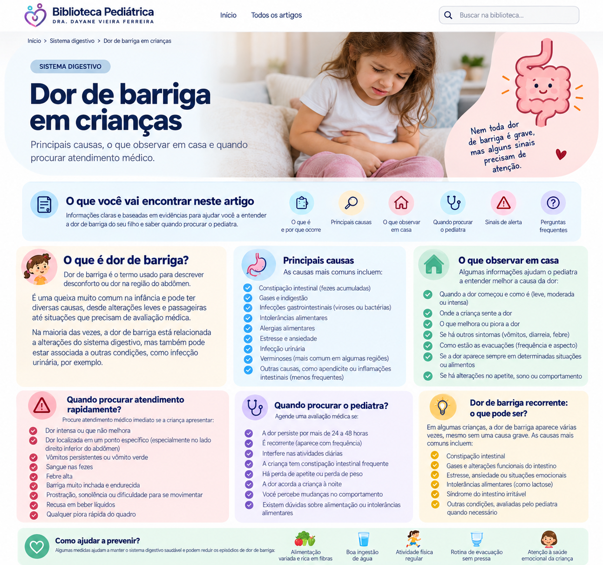

Dor de barriga em crianças
É uma queixa muito comum na infância. Saiba o que observar, quais situações podem estar relacionadas e quais sinais indicam que a criança precisa ser avaliada.
O que observar?
Antes de pensar em uma causa específica, observe como a criança está no conjunto. Veja onde dói, quando começou, se a dor vai e volta ou está piorando e se desperta a criança durante a noite.
Sobre a dor
- local e intensidade;
- quando começou;
- se é contínua ou vai e volta;
- se está piorando;
- se interfere nas atividades ou no sono.
Outros sintomas
- febre e vômitos;
- diarreia ou constipação;
- sangue nas fezes;
- alterações para urinar;
- perda de apetite ou peso.
O que pode causar?
Existem muitas possibilidades. Constipação intestinal é uma causa frequente. Infecções gastrointestinais também podem causar dor, geralmente acompanhadas de outros sintomas. Problemas fora do intestino, como infecção urinária, também podem se manifestar como dor abdominal.
Quando a dor se repete por semanas ou meses, algumas crianças apresentam desordens da interação intestino-cérebro. Nesses casos, a dor é real mesmo quando não há uma lesão estrutural no intestino.
Dor de barriga e constipação
Fezes endurecidas, evacuações dolorosas, retenção e evacuações muito espaçadas podem estar relacionadas à dor abdominal. Se a criança também apresenta sinais de constipação, essa informação deve ser relatada ao pediatra.
E quando a dor se repete?
Dores recorrentes ou crônicas merecem avaliação, principalmente quando interferem na escola, no sono, na alimentação ou nas atividades da criança. A Sociedade Brasileira de Pediatria informa que grande parte das dores abdominais crônicas está relacionada a desordens da interação intestino-cérebro, enquanto uma parcela menor está associada a doenças orgânicas.
Estresse e outros fatores emocionais podem influenciar alguns quadros, mas isso não significa que a criança esteja inventando a dor.
O que fazer enquanto observa?
Observe o estado geral
Veja se ela continua interagindo e se movimentando ou se está progressivamente mais abatida.
Ofereça líquidos
Se estiver aceitando, mantenha hidratação adequada e observe redução importante da urina.
Observe a alimentação
Se houver redução temporária do apetite, acompanhe a evolução e dê atenção especial à hidratação.
Evite automedicação
Não use medicamentos para dor, cólica, vômitos ou laxantes por conta própria para tentar tratar uma causa ainda desconhecida.
Quando procurar atendimento rapidamente?
- dor muito intensa, progressiva ou associada a importante abatimento;
- dor persistente e bem localizada com piora clínica;
- vômito verde (bilioso) ou vômitos repetidos com dificuldade para manter líquidos;
- sangue nas fezes ou no vômito;
- abdome muito distendido, duro ou muito doloroso;
- febre associada a dor importante ou piora do estado geral;
- desmaio, palidez intensa, dificuldade para acordar ou alteração importante do comportamento;
- sinais de desidratação, como pouca urina e dificuldade para beber.
Quando marcar consulta?
Mesmo sem sinais de urgência, procure avaliação quando a dor se repete, persiste, acorda a criança à noite, interfere nas atividades, vem acompanhada de perda de peso, alterações persistentes nas fezes, vômitos sem explicação ou outros sintomas preocupantes.
Nem toda criança com dor recorrente precisa de muitos exames. O pediatra utiliza a história e o exame físico para decidir se há indicação de investigação adicional.
Perguntas frequentes
Dor perto do umbigo é sempre gases?
Não. Crianças podem apontar essa região em diferentes tipos de dor. O local isoladamente não define a causa.
Ansiedade pode dar dor de barriga?
Fatores emocionais e estresse podem participar de algumas dores recorrentes pela interação entre cérebro e intestino. A dor continua sendo real.
Precisa fazer ultrassom?
Nem sempre. Exames são escolhidos conforme os sintomas, sinais de alerta e exame clínico.
Constipação pode causar dor?
Sim. Ela pode provocar dor abdominal, especialmente quando há fezes duras, retenção ou evacuação dolorosa.
Resumo visual
Veja no infográfico os principais pontos sobre dor de barriga em crianças, o que observar e os sinais que merecem avaliação.

Fontes e revisão
Conteúdo baseado principalmente em materiais da Sociedade Brasileira de Pediatria e em diretriz pediátrica de dor abdominal aguda.
SBP — Dor abdominal crônica (agosto/2024)
SBP — Dor na infância: sinais de alerta (setembro/2025)
Royal Children's Hospital — Abdominal pain: acute
Última revisão: setembro de 2026.